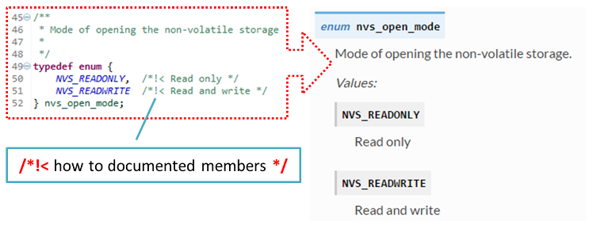

Documenting Code
The purpose of this description is to provide a quick summary of the documentation style used in espressif/esp-idf repository and how to add new documentation.
Introduction
When documenting code for this repository, please follow Doxygen style. You are doing it by inserting special commands, for instance @param, into standard comments blocks, for example:
/**
* @param ratio this is oxygen to air ratio
*/
Doxygen can phrase the code, extract the commands together with subsequent text, and build documentation out of it.
Typical comment block, that contains documentation of a function, looks like below:

Doxygen supports a couple of formatting styles. It also gives you great flexibility on the level of details to include in documentation. To get familiar with available features, please check data-rich and very well-organized Doxygen Manual.
Why We Need Doxygen?
The ultimate goal is to ensure that all the code is consistently documented, so we can use tools like Sphinx and Breathe to aid preparation and automatic updates of API documentation when the code changes.
With these tools, the above piece of code renders like below:

Go for It!
When writing code for this repository, please follow guidelines below:
Document all building blocks of code, including functions, structs, typedefs, enums, macros, etc. Provide enough information about purpose, functionality, and limitations of documented items, as you would like to see them documented when reading the code by others.
Documentation of function should describe what this function does. If it accepts input parameters and returns some value, all of them should be explained.
Do not add a data type before parameter or any other characters besides spaces. All spaces and line breaks are compressed into a single space. If you like to break a line, then break it twice.

If function has void input or does not return any value, then skip
@paramor@return.
When documenting a
defineas well as members of astructorenum, place specific comment like below after each member.To provide well-formatted lists, break the line after command (like
@returnin the example below).* * @return * - ESP_OK if erase operation was successful * - ESP_ERR_NVS_INVALID_HANDLE if handle has been closed or is NULL * - ESP_ERR_NVS_READ_ONLY if handle was opened as read only * - ESP_ERR_NVS_NOT_FOUND if the requested key does not exist * - other error codes from the underlying storage driver *
Overview of functionality of documented header file, or group of files that make a library, should be placed in a separate
README.rstfile of the same directory. If this directory contains header files for different APIs, then the file name should beapiname-readme.rst.
Go One Extra Mile
Here are a couple of tips on how you can make your documentation even better and more useful to the reader and writer.
When writing code, please follow the guidelines below:
Add code snippets to illustrate implementation. To do so, enclose snippet using
@code{c}and@endcodecommands.* * @code{c} * // Example of using nvs_get_i32: * int32_t max_buffer_size = 4096; // default value * esp_err_t err = nvs_get_i32(my_handle, "max_buffer_size", &max_buffer_size); * assert(err == ESP_OK || err == ESP_ERR_NVS_NOT_FOUND); * // if ESP_ERR_NVS_NOT_FOUND was returned, max_buffer_size will still * // have its default value. * @endcode *
The code snippet should be enclosed in a comment block of the function that it illustrates.
To highlight some important information use command
@attentionor@note.* * @attention * 1. This API only impact WIFI_MODE_STA or WIFI_MODE_APSTA mode * 2. If the ESP32 is connected to an AP, call esp_wifi_disconnect to disconnect. *
Above example also shows how to use a numbered list.
To provide common description to a group of similar functions, enclose them using
/**@{*/and/**@}*/markup commands./**@{*/ /** * @brief common description of similar functions * */ void first_similar_function (void); void second_similar_function (void); /**@}*/
For practical example see nvs_flash/include/nvs.h.
You may want to go even further and skip some code like repetitive defines or enumerations. In such case, enclose the code within
/** @cond */and/** @endcond */commands. Example of such implementation is provided in esp_driver_gpio/include/driver/gpio.h.Use markdown to make your documentation even more readable. You will add headers, links, tables and more.
* * [ESP32 Technical Reference Manual](https://www.espressif.com/sites/default/files/documentation/esp32_technical_reference_manual_en.pdf) *
Note
Code snippets, notes, links, etc., will not make it to the documentation, if not enclosed in a comment block associated with one of the documented objects.
Prepare one or more complete code examples together with description. Place description to a separate file
README.mdin specific folder of examples directory.
Standardize Document Format
When it comes to text, please follow guidelines below to provide well-formatted Markdown (.md) or reST (.rst) documents.
Please ensure that one paragraph is written in one line. Do not break lines like below. Breaking lines to enhance readability is only suitable for writing code. To make the text easier to read, it is recommended to place an empty line to separate the paragraph.
Please make the line number of CN and EN documents consistent like below. The benefit of this approach is that it can save time for both writers and translators. When non-bilingual writers need to update text, they only need to update the same line in the corresponding CN or EN document. For translators, if documents are updated in English, then translators can quickly locate where to update in the corresponding CN document later. Besides, by comparing the total number of lines in EN and CN documents, you can quickly find out whether the CN version lags behind the EN version.
{kind=link}
{kind=link}
{kind=link}
Building Documentation
To build documentation, start by installing the dependencies:
Install Doxygen.
Chances are you already set up the required tools by running
./install.sh. To enable building docs, you need to run:./install.sh --enable-docsThis action will install the
esp-docsPython package. This package is a wrapper around Sphinx and is required to build ESP-IDF documentation.
After installing the dependencies, go to the docs folder and run the following to build the documentation:
build-docs build
You can also build only the needed docs by choosing a specific target and language (it speeds up the process):
build-docs -t esp32 -l en build
For more in-depth information, see the esp-docs documentation.
Wrap Up
We love good code that is doing cool things. We love it even better, if it is well-documented, so we can quickly make it run and also do the cool things.
Go ahead, contribute your code and documentation!